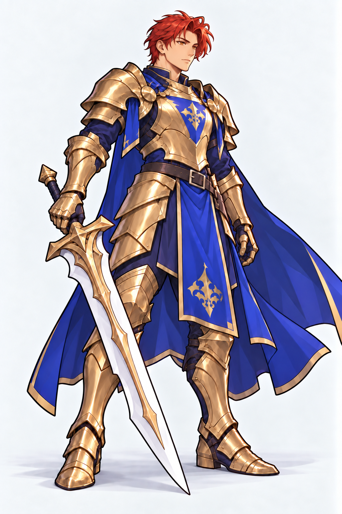

<!doctype html><html lang="zh-CN"><meta charset="utf-8"><meta name="viewport" content="width=device-width,initial-scale=1"><title>骑士 · 身体比例修订</title><style>body{margin:0;background:#e8e5df;color:#282622;font:15px/1.5 -apple-system,BlinkMacSystemFont,sans-serif}main{max-width:1300px;margin:auto;padding:16px 24px}h1{font-size:22px;margin:0 0 10px}.pair{display:grid;grid-template-columns:1fr 1fr;gap:16px}figure{margin:0;background:#f8f7f4;border:1px solid #c9c4bb;border-radius:8px;overflow:hidden}figcaption{padding:8px 12px}img{display:block;width:100%;height:calc(100vh - 145px);object-fit:contain}a{color:#374c7d}p{margin:8px 0}@media(max-width:600px){main{padding:10px}.pair{gap:6px}img{height:auto}}</style><main><h1>骑士 · 身体比例修订</h1><div class="pair"><figure><figcaption>比例修订前</figcaption><a href="../outline-pass/knight-face-east-asian.png"></a></figure><figure><figcaption>比例修订稿</figcaption><a href="../outline-pass/knight-proportions-v2.png"></a></figure></div><p><a href="../outline-pass/knight-proportions-v2-prompt.txt">完整提示词</a></p></main></html>